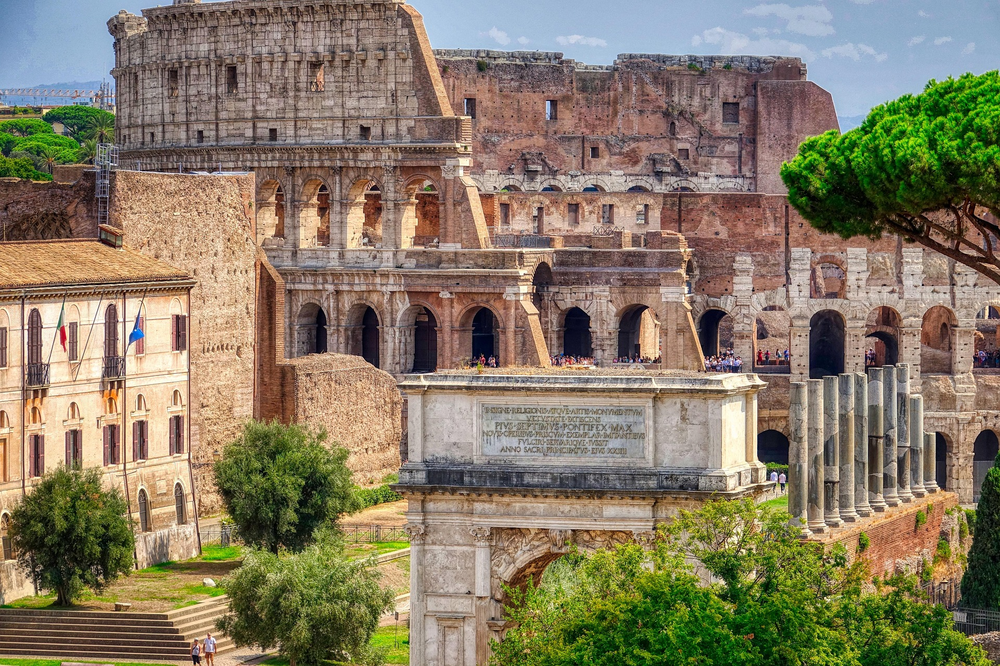

Découvrez l’incontournable Colisée de Rome : une plongée au cœur de l’histoire antique !
Le Colisée, ou amphithéâtre Flavien, est un monument emblématique de la Rome antique, situé au cœur de la capitale italienne. Construit entre 72 et 80 apr. J.-C. sous les empereurs Vespasien et Titus de la dynastie flavienne, il pouvait accueillir environ 50 000 spectateurs. Cet amphithéâtre servait principalement à des spectacles publics tels que les combats de gladiateurs, les chasses d’animaux sauvages, et même des reconstitutions de batailles navales (grâce à un système d’inondation de l’arène). Symbole de la puissance et de l’ingéniosité romaines, le Colisée fut aussi un lieu de divertissement pour le peuple. Au fil des siècles, il a subi des dommages causés par des tremblements de terre, des pillages et l’usure du temps. Aujourd’hui, bien que partiellement en ruines, le Colisée demeure l’un des monuments les plus visités au monde et un symbole de la grandeur de la civilisation romaine. Il fait partie du patrimoine mondial de l’UNESCO depuis 1980.
Visiter le Colisée, c’est plonger dans l’histoire fascinante de la Rome antique. Avec des visites guidées ou des audioguides, vous pouvez découvrir comment ce lieu fonctionnait et son importance dans la vie des Romains.
Depuis les niveaux supérieurs du Colisée, profitez d’une vue imprenable sur le Forum Romain, le Palatin et les merveilles de la Ville Éternelle. Une expérience à couper le souffle pour vos yeux et votre appareil photo !
